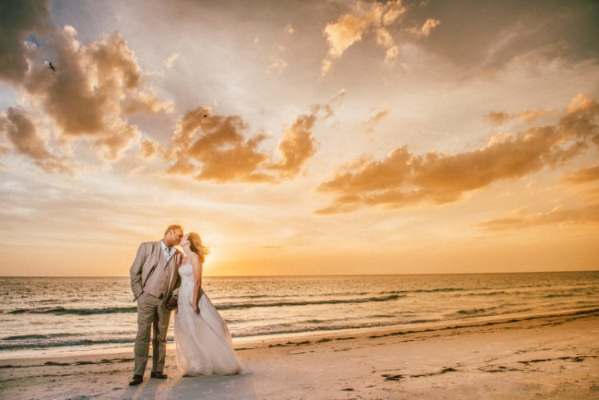
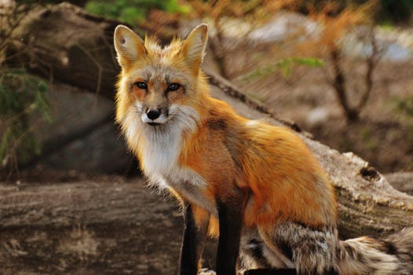
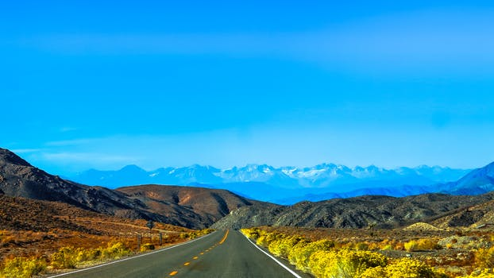

Enjoy a Moment Never Forgotten
Nothing in this life is more valuable than our experiences with our loved ones. The only problem is that those
precious moments seem to pass us by so quickly. If only we could capture those moments to enjoy forever.
Thankfully, through the use of digital media, these moments can be frozen in time and kept for us to enjoy. With the right
equipment and the right eye, a masterpiece can be made of your precious moment.
That's where Jack McLoughlin comes in. His portfolio stands as proof of his skill and ability in crafting this masterpiece.
Contact Jack today to set up an interview session with a professional.
- 
- 